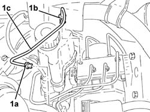
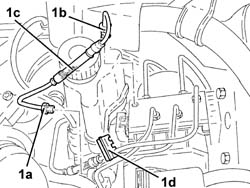
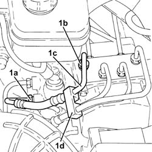
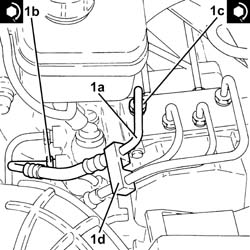
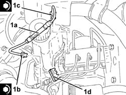
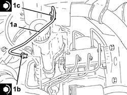

3340B52 pump/central obs pipe - r r
- Path
- Procedures > 33 BRAKING SYSTEM > 3340 A(B.S. ANTI-LOCK BRAKING SYSTEM .) > 3340B abs system pipes > 3340B52 pump/central obs pipe - r r
- Kind
- repair procedure (removal / refitting; the operation number is the code)
- Applies to
- all engines; all production periods
- Interactive page
- https://sloeber94.github.io/elrnDB-a147/en/#/3025258
Applies to: all engines; all production periods
 Removing
Removing
 Refitting
RefittingPosition the vehicle on the ramp.
Proceed with removal 4450B10 Front WHEEL (one) - R.R. .
Remove the protective cap on the brake caliper bleed valve.
Connect the collection system (pipe and reservoir) to the bleed valve on the brake caliper.
Operate the brake pedal until the brake-clutch fluid reservoir is empty.
Applies to: engines: 1.6 TS, 2.0 TS; all production periods
1. Undo the connectors (1a) and (1b) and remove the rigid pipe from the master cylinder to the ABS hydraulic unit (1c).

Applies to: all engines; all production periods; only with equipment: VDC
1. Undo the connectors (1a) and (1b) and remove the rigid pipe from the master cylinder to the ABS hydraulic unit (1c) after releasing it from the attachment (1d).

Applies to: engines: 3.2 V6; all production periods
1. Undo the connectors (1a) and (1b) and remove the rigid pipe from the master cylinder to the ABS hydraulic unit (1c) after releasing it from the attachment (1d).

Applies to: engines: 3.2 V6; all production periods
Refitting
Removing1. Place the rigid pipe from the master cylinder to the ABS hydraulic unit (1a) back in its seating, tighten the connectors (1b) and (1c) to the recommended torque and secure it with the attachment (1d).
 | Fastening | Component | Ø | Value (daNm) |
|---|---|---|---|---|
1b | Connector | PIPE FROM PUMP TO HYDRAULIC CONTROL UNIT | M12 | (Master cylinder side) 1.4 ÷ 1.8 |
| Fastening | Component | Ø | Value (daNm) |
|---|---|---|---|---|
1c | Connector | PIPE FROM PUMP TO HYDRAULIC CONTROL UNIT | M12 | (A.B.S.) control unit side 1.4 ÷ 1.8 |

Applies to: all engines; all production periods; only with equipment: VDC
1. Place the rigid pipe from the master cylinder to the ABS hydraulic unit (1a) back in its seating, tighten the connectors (1b) and (1c) to the recommended torque and secure it with the attachment (1d).
| Fastening | Component | Ø | Value (daNm) |
|---|---|---|---|---|
1b | Connector | PIPE FROM PUMP TO HYDRAULIC CONTROL UNIT | M12 | (Master cylinder side) 1.4 ÷ 1.8 |
| Fastening | Component | Ø | Value (daNm) |
|---|---|---|---|---|
1c | Connector | PIPE FROM PUMP TO HYDRAULIC CONTROL UNIT | M12 | (A.B.S.) control unit side 1.4 ÷ 1.8 |

Applies to: engines: 1.6 TS, 2.0 TS; all production periods
| Fastening | Component | Ø | Value (daNm) |
|---|---|---|---|---|
1b | Connector | PIPE FROM PUMP TO HYDRAULIC CONTROL UNIT | M12 | (Master cylinder side) 1.4 ÷ 1.8 |
| Fastening | Component | Ø | Value (daNm) |
|---|---|---|---|---|
1c | Connector | PIPE FROM PUMP TO HYDRAULIC CONTROL UNIT | M12 | (A.B.S.) control unit side 1.4 ÷ 1.8 |

Applies to: engines: 1.6 TS, 2.0 TS; all production periods
Bleed the air from the hydraulic braking system 3330A14 HYDRAULIC BRAKING SYSTEM - Bleed air .
Proceed with refitting 4450B10 Front WHEEL (one) - R.R. .
Remove the car from the ramps.